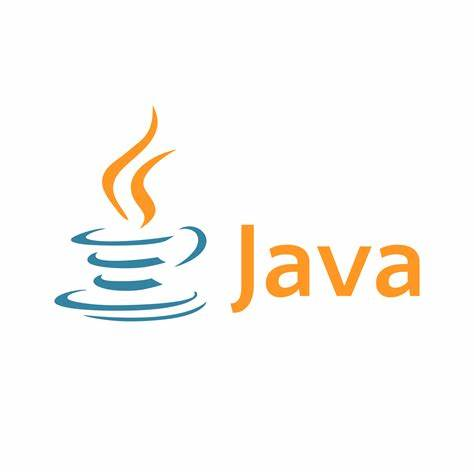
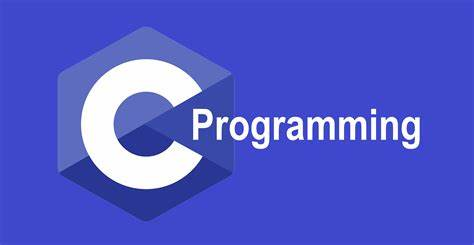
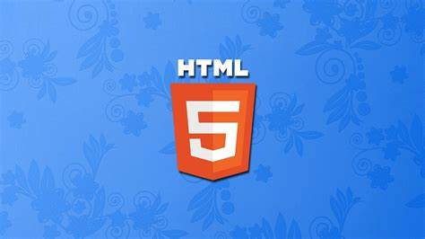
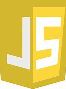

About Me
My name is Rinchen Om, and I am in my second year of studying Information Technology at the College of Science and Technology. I am from Chhukha, Bhutan. Apart from my academic persuits, I have a deep interest in exploring new technologies because I believe they have potential to shape the future and help solve real-world problems.I like keeping up with things like artificial intelligence, blockchain, and cloud computing.
In addition to Technology, I am a big fan of science fiction movies. I think they are great for sparking creativity and imagining what the future could be like. When I am not studying or watching movies, I enjoy spending time in nature to relax and get fresh ideas that help me recharged.
In the future, I aspire to become a full-stack developer. Although I am still in the process of learning web development and coding, I’m passionate and excited to gain new skills. I firmly believe in the value of hardwork and perseverance, and I am continuously improving and reaching my goal in Tech field.
 CSS
CSS
Skills
Python
Java
C
HTML
CSSJavaScript
Database